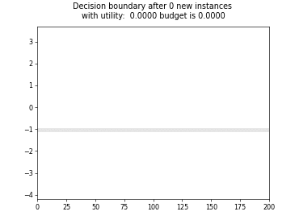

Stream Based AL Strategies#
Legend for classification plots

Split

Periodic Sampling


Cognitive Dual-Query Strategy with Random Sampling
Cognitive Dual-Query Strategy with Random Sampling

Cognitive Dual-Query Strategy with Fixed-Uncertainty
Cognitive Dual-Query Strategy with Fixed-Uncertainty

Cognitive Dual-Query Strategy with Variable-Uncertainty
Cognitive Dual-Query Strategy with Variable-Uncertainty
Cognitive Dual-Query Strategy with Randomized-Variable-Uncertainty
Cognitive Dual-Query Strategy with Randomized-Variable-Uncertainty